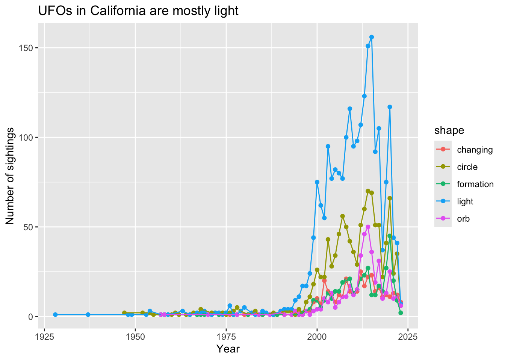

# This is a comment!1. Summary
Packages
tidyverse
Operations
- calculations using
mean()andmax()
- read in data using
read_csv()
- filter data using
filter()
- arrange data using
arrange()
- create new column using
mutate()
- group data using
group_by()
- count observations using
count()
- chain functions together using
%>%
- visualize data using
ggplot()
- creating points and lines using
geom_point()andgeom_line()
Data source
This workshop’s data comes from Tidy Tuesday 2023-06-20, which was from the National UFO Reporting Center and sunrise-sunset.org by Jon Harmon.
2. Code
1. Intro to scripts
In class, we use an R Script. It allows you to write your code (recipe) and run the code in the console (kitchen).
R considers everything in the script as code to run, so you can write comments in the R Script by putting a pound sign at the beginning of the line. This is especially useful when you want to explain what your code is doing at each line in plain language.
Try writing a comment of your own in the line below.
2. Intro to functions
R allows you to apply functions to do calculations, from simple to complex structures. Run code by putting your cursor on the line and hitting Ctrl + Enter or Cmd + Enter.
mean(c(4, 5, 1, 2, 1))[1] 2.6You can store things you want to use over and over again as objects.
numbers <- c(4, 6, 2, 5, 3, 10)and then you can use those objects in functions.
max(numbers)[1] 103. loading in packages and data
library(tidyverse)ufo_sightings <- read_csv("ufo_sightings.csv")View(ufo_sightings)4. cleaning and wranging
These are all functions in the tidyverse that allow you to work with your data in R.
First, you can filter by state to only include California.
df1 <- filter(ufo_sightings,
state == "CA") Then, you can arrange the data frame by date.
df2 <- arrange(df1,
reported_date_time)Then, you can make a new column just with the year.
df3 <- mutate(df2,
extracted_year = year(reported_date_time)) Then, you can group the data frame by year and shape.
df4 <- group_by(df3,
extracted_year, shape)Then, you can count the number of occurrences by year and shape.
df5 <- count(df4) Then, you can filter the data frame by the shapes you’re interested in.
df6 <- filter(df5,
shape %in% c("formation", "circle", "orb", "changing", "light"))5. an easier way to clean and wrangle
You can use what’s called a pipe operator to chain functions together. The keyboard shortcut for a pipe is Ctrl + Shift + M or Cmd + Shift + M.
When reading your code aloud, you can read the pipe as “and then”
new_mexico <- ufo_sightings %>% # use the ufo_sightings data frame
filter(state == "NM") %>% # and then, filter by state to only include New Mexico
arrange(reported_date_time) %>% # and then, arrange by date
mutate(extracted_year = year(reported_date_time)) %>% # and then, create a new column for the year
group_by(extracted_year, shape) %>% # and then, group by extracted_year and shape
count() # and then, count occurrences6. data visualization
ggplot(data = df6,
aes(x = extracted_year,
y = n,
color = shape)) +
geom_point() +
geom_line() +
labs(x = "Year",
y = "Number of sightings",
title = "UFOs in California are mostly light")